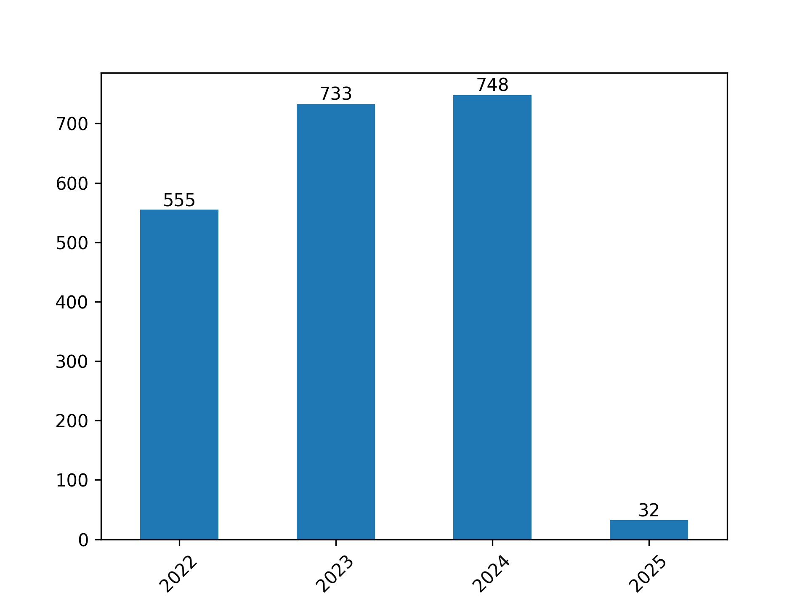

Summary#
As previously reported, the total number of publications used in this report is 2068. This is the filtered total, which drops records which are incomplete or do not meet the criteria to be included (i.e. minimum year restriction, etc.).
The number of publications per year are shown in the bar graph below:
{kind=link}

Fig. 1 Total Publications by Year#
This list does include publications which may have been published before the October start of the ACCESS program because metadata for publication month is not consistent across all Crossref metadata.
Citation Evaluation#
Citation analysis is one of many critical tools to understand the impact of a publication. More citations often correlate with higher impact papers, and as is widely known, there are many other criteria that must be used to truly assess the value of a publication on a discipline such as its methodological rigor, originality of the research question, reproducibility of the results, influence on subsequent research and policy, and its broader societal impact. Furthermore, citation counts can be influenced by factors unrelated to quality, such as the field of study, the publication venue, author reputation, and even self-citation practices. Therefore, while citations provide a useful quantitative measure, they should be interpreted cautiously and within a broader context of qualitative assessment.
Citation Summary
Total citations (2,068 publications):
16,198
Mean cites:
7.83 cites per paper
Median cites:
3.0 cites per paper
This table shows the frequency and percent of publications that are slightly above the mean citation count for the dataset. 584 (28.2%) publications accumulated 8 or more citations.
# of Citations |
# of Pubs |
% Total |
|---|---|---|
8-24 |
457 |
22.1% |
25-49 |
91 |
4.4% |
>49 |
36 |
1.74% |
Top Publications#
The 5 most cited publications showcase highly accomplished papers given the short timespace of the dataset (2022-2025).
This rapid accumulation of citations suggests these works are either foundational, highly novel, or address particularly pressing research questions within their respective fields, leading to immediate and widespread recognition by the scientific community.
These papers also showcase the diversity of research and scientific use cases of ACCESS community.
Most Cited Publications Summary
5 most cited papers:
(505 cites) Case, D. A., and Coauthors, 2023: AmberTools. Journal of Chemical Information and Modeling, 63, 6183–6191, https://doi.org/10.1021/acs.jcim.3c01153.
(239 cites) Gichoya, J. W., and Coauthors, 2022: AI recognition of patient race in medical imaging: a modelling study. The Lancet Digital Health, 4, e406–e414, https://doi.org/10.1016/s2589-7500(22)00063-2.
(200 cites) Yuan, S., and Coauthors, 2022: Tunable metal hydroxide–organic frameworks for catalysing oxygen evolution. Nature Materials, 21, 673–680, https://doi.org/10.1038/s41563-022-01199-0.
(173 cites) Zeng, J., and Coauthors, 2023: DeePMD-kit v2: A software package for deep potential models. The Journal of Chemical Physics, 159, https://doi.org/10.1063/5.0155600.
(158 cites) , and Coauthors, 2022: Evidence for neutrino emission from the nearby active galaxy NGC 1068. Science, 378, 538–543, https://doi.org/10.1126/science.abg3395.
For a more complete view of the top publications, see the analysis here.
Broad Trends#
From the lens of publications ACCESS appears to provide strong research support for:
Computational Tools and Databases
Chemistry
Biology and Medicine
Physics and Astronomy
Machine Learning and Computational Methods (applied and disciplinary)
Unsurprisingly these fields are intensely computational and require significant resources for cutting edge research. The breadth of these supported areas suggests that ACCESS is also fostering interdisciplinary collaborations and enabling breakthroughs at the intersections of these disciplines.